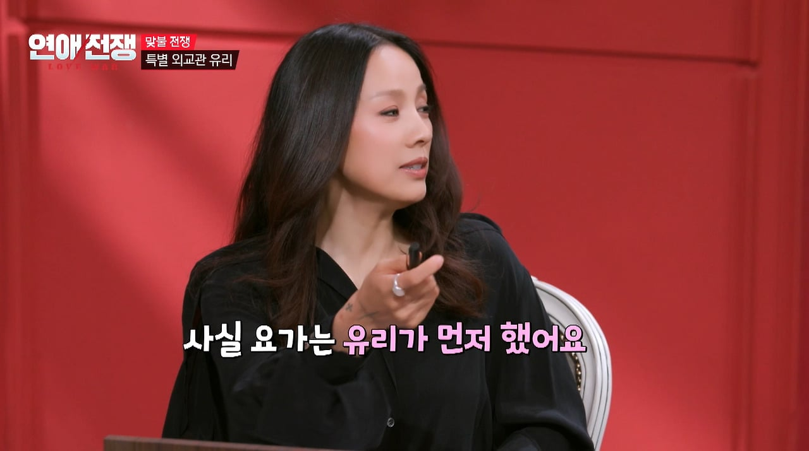
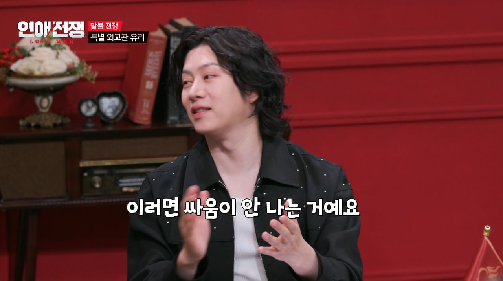

이젠 별로 안살고 싶긴해
살래 말래 살래 말래
애매하긴 해
옦꼐~~~~~~~~~2
제주가 좋긴한가봐 연예인들 다들 별장 해놓고
효리는 모르겠는데 유리는 연세래 (월세 개념)
제주도에 1년 단위로 집 빌리는거 있다고 하더라고
이효리는 매수했다가 방송타고 관광지 되서 방송사에 잘 팔고 나갔고.
제주도는 원래 연세내는걸로 유명했음.
제주도가 원래 부동산 전월세대신 연세를 많이씀
세상에서 비켜 소리 많이 들은 연예인 1위 아닐까
유쾌하게 잘 받았네 대본이겠지
저기서 UFC나오고 분위기 창나면
제작진입장에선 바이럴되게 방송 내고싶겠지만,
출연자들이나 소속사에서 편집 요구할거고 자칫 저부분 통으로 들어내야될거같음.
그래서 유쾌하게 풀어갈수있도록 서로 이런 주제 대화할거고, 이런식으로 대답하시는게 좋고
그런 느낌의 대본을 통한 WWE이지 않을까싶음
10월 제주가 진짜 이쁜데
서귀포쪽은 갈 곳은 많은데 이동 거리 때문에 3박4일 이런걸로는 너무 짧아서 한 달 살기 해보고 싶긴 해
마라도 갈대밭 좋음
간김에 짜장면도 먹고
요가하면 다 이효리인가요 너무 화내면서 말하지 않으면 그냥 할말이 없는 정론임 ㅋㅋ
원래 기싸움 하냐고 꼬투리 잡히기 제일 쉬운 게 정론임
걍 돈좀 많다 하는 사람들은 제주도에 별장 하나씩 마련하더라
이효리 ㅈㄴ이쁘네
유리가 라디오게스트할때 재밌었는데
이효리가 한 10년은 최고 아니었나
걍 클라스가 달랐는데
따라하는 게 당연한 사람이었고
따라할 의도가 없어도 하면 유행이었으니
예전엔 제주도에서 살고 싶었는데 뭐 이젠 경찰 이슈에 짱.깨 천국에...
제주도 살고싶긴해